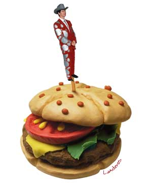

|

Lunch With The Fat Man
Practical advice for musicians and would-be musicians. But it's not just about the music. It's about life. It's about art. It's about lunch! Let's eat!
- - - - - - - - - -
by George Alistair Sanger
Installment index
"It's Just a Phase"
Hi. Sit down. What are you having? Welcome to Lunch With The Fat Man.
Having trouble with your band? Perhaps it's just a phase that your band is going through. This article may be able to help you identify the phase. That would help you identify the problem, and, then, ultimately, to solve it.
So your first step to happiness, fame, and fortune is to learn the phases, or the "When, Where, Who, What, and Why" of musical relationships. All bands, everywhere, on all planets, and at all times, will go through these exact five phases. In this order:
PHASE 1: When Do We Get There?
In the first few days, weeks, or years of development, everyone in the band is excited about being the next Beatles, the next Next, the new New Kids On The Block on the block. Often there's a sense that there is magic in the air. Often it is just because the band members are drinking freely. Or because they all sound better when they play with these new band members than they sounded playing with the old band members (or with nobody). Or, sometimes, it's because there's magic in the air.
I try to keep this column realistic and practical, but let me give you a small word of advise regarding magic -You never lose it, you just get used to it.
PHASE 2: Where Do I Fit In?
Soon, (usually a microsecond or so after they stop playing and start talking) the band members start to define their rolls in the band. Who is the Leader? Who is the Rocker? Who is the Talented One? Who is the Cute One? Who Gives a Damn? This phase gets pretty complicated, because everybody acts differently in the presence of different combinations of band members. Archie and Jughead might get along really well, but when Reggie starts to work on Jughead, it might be all Archie can do to stay in the room with them.
Working out all the different combinations and permutations, I have found that a four-person band contains the relationship trouble equivalent (RTE) of two hundred billion marriages. And that's a unisex band. Everybody knows that all bands these days have somebody's girlfriend or boyfriend in the band, and in these cases the RTE actually becomes infinity, and it is theoretically impossible for any band member to exist in the same city with any other.
Most musicians deal with this in the simplest way possible, of course - they turn off their brains, stop relating, and start acting like real rock stars.
PHASE 3: Who Cut the Cheese?
During this phase, everybody takes a turn in the doghouse. Kirk is too gung-ho, and it's no fun any more. Sulu doesn't take it seriously. Scotty has great equipment, but is that enough? Bones swears on stage. Spock has no feeling. Chapel is dead weight.
PHASE 4: What Money?
At some point, money starts to matter. Perhaps there is too much money, and each band member is concerned that it be divided equally.
But seriously, Phase 4 is the phase in which the band members start to come to grips with the fact that there may be no money in music. Or, that the satisfaction they were hoping to get from their involvement in music has a price. They have to hold down a job. They have to rehearse or play daily. They have to keep strange hours. They have to hang around with "Him". This is when bands usually call it quits or transcend to Phase5.
PHASE 5: Why Worry?
This is real meat of the music world - the pot of gold at the end of the long and winding metaphor. This is when the band members know the price of success, and decide that they are, in fact, willing to pay it.
Sure the hours are awful, but they can handle it. Sure the money is bad, but their house payments are low. Sure the other guys show up late and drunk, but they know all the good jokes. My advice? Skip right to this phase, and stick to it for the rest of your life.
A final word: Every form of musical success has a price - find one that fits your budget, and enjoy some of that magic.
 Next page | "Song, Arrangement, Recording: Knowing The Difference" Next page | "Song, Arrangement, Recording: Knowing The Difference"
1, 2, 3
|